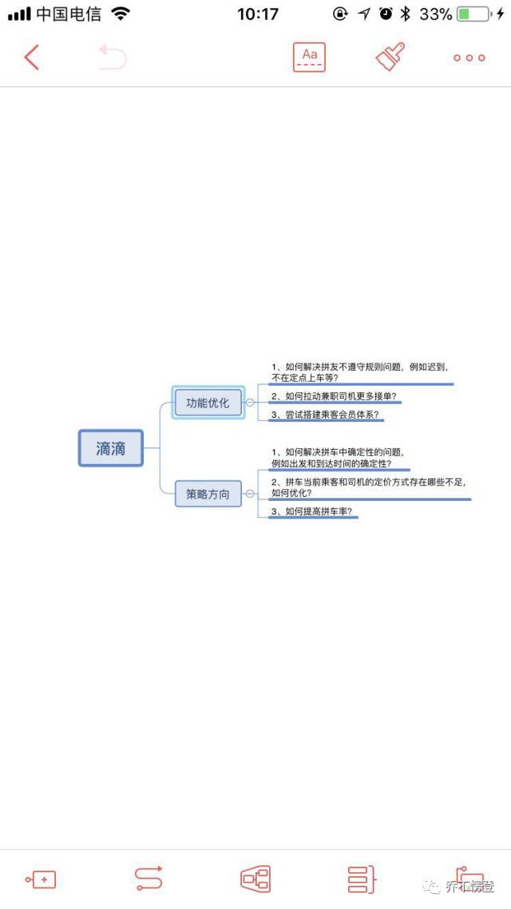
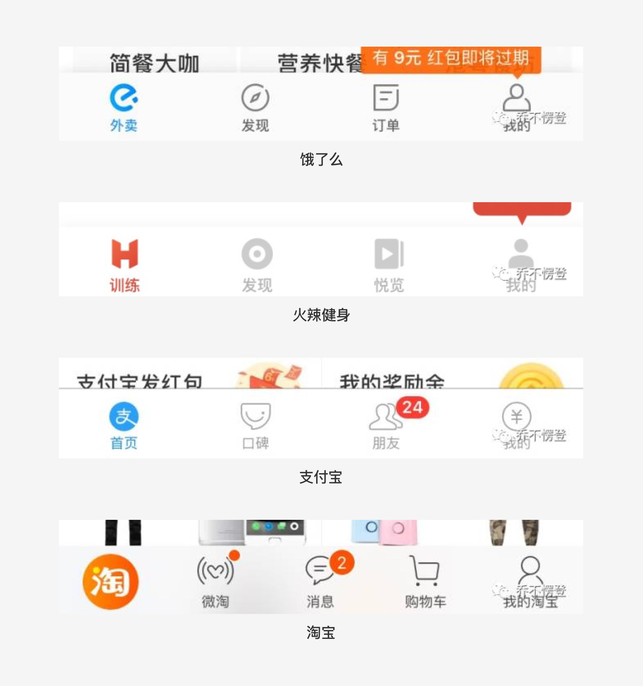

2018-01-22
「界面中存在的每一个元素，都是有意义的。」这是我进行产品设计时的一贯主张。
小到一个标点符号、一根分割线，大到一个图标、一张图片、一个字段，都要有其存在的理由。
那么在产品设计中出镜率相当之高的图标，有哪些真真切切存在的价值呢？
下面的几点总结，是我在思考产品的视觉层面时关于图标的几个考察点：
1、装饰；
2、表意；
3、趣味；
4、品宣；
正文
装饰，也可以称作修饰，是指通过图标对页面进行润色，使页面看上去更加饱满；同时，通过图标增加页面的层次感，使页面各部分内容得以区分。
图标的装饰作用在我看来是图标的基础作用，绝大部分图标都能起到装饰的作用。
我们经常会听到一些描述视觉效果的形容词：「节奏感」、「层次感」、「呼吸感」等等。
要使一个页面有节奏感、层次感，除了可以通过「留白」、「分割线」、「分割块」、「对比」等手法，图标也是一个常用的手段。
下面看几个栗子：
图1是知乎网页版的侧边栏，灰色的图标，即起到了装饰的作用，又不会抢夺用户的注意力，使得用户的注意力可以聚焦在阅读内容本身。

上图是东兴198的交易首界面，通过图标的“有无”、“强弱”，整个页面被分为了三个部分。
顶部的“买、卖、撤、持、查”是股票交易中最常用的操作，所以用了文字性图标，既起到了装饰作用，且表意明确、直接，这也是很多股票类APP会用到的图标风格，视觉上也能第一时间引起用户的注意。
其次使用频率相对较低的功能操作“新股申购、资管产品、港股通、国债逆回购”用了四种颜色填充、体量感较小的方块状图标。
而最底部的列表项功能则未使用图标，使得与上面的其他功能明显区分开来。
整个页面通过图标与布局的变换，松弛有度，层次感强。用户单纯通过视觉引导就能很好的对各部分功能做出区分。
「凡事有度，过犹不及」
虽然图标的装饰作用可以让页面有节奏感和层次感，但是切忌过度使用。
比如页面中已经使用留白和分割线等营造出了整个页面的层次感，那么是否需要使用图标进行装饰就当两说了。
如果使用图标进行装饰，如何使图标和装饰对象（通常是文字内容）之间达到最佳平衡，如何在起到装饰作用的同时不会干扰用户，是在进] 行图标设计时要认真考量的地方。
“表意”，在我看来是图标的第二个功能，在“装饰”的基础上有所升华。直白来说，图标的表意体现在对于功能的解释上。
互联网经过这几年的快速发展，用户对于一些图标形成了一些约定俗成的认知，我们在进行产品设计时要做到心中有数，使用的时候切忌打破常规。
下面是几个常用的图标：
对于这些在用户心智中形成固有模式的图标，我们使用的时候可以在此基础上做变形、创新，但如果要打破用户的习惯认知，一定要谨慎。
下面举几个我个人认为在表意性上做的比较好的栗子：
上图是QQ音乐的下载icon，将“下载”和“金钱”相结合，一眼看上去就知道是“付费下载”，表意非常明确。

上图是xmind手机版的编辑页面以及底部的功能图标。作为一款手机版的脑图软件，各种功能并不如社交类、电商类软件的功能常见，所以如 何进行功能图标的设计就比较考验人了，而且必须表意明确。我初次使用xmind手机APP的时候，看到这些图标就很喜欢，因为它们表意非常直接明确，而且图标并不复杂，简洁、明晰结合的很好。
试想一下，如果把上图中的图标换成文字，底部的工具栏就会显得非常拥挤，并且文字描述并不一定比图标来的准确。
趣味，也可以称作愉悦，能带给人愉悦感受的图标可以称得上很好的图标了。
如果愉悦的同时有很好的表意性，无疑是一个极棒的图标了。但话说回来，让人困惑不解的图标通常情况下也是不能带给人愉悦感的。
下面看个栗子，同样是QQ家族：
上面三张图是QQ底部的三个标签在选中和未选中状态下的表现，可以说非常可爱了。
注意消息icon和联系人icon，它们的眼睛，可是会动的哟，跟着你的选择而动，很好玩。虽然动态icon没有眼睛，但是图标的形态，是有倾 向性的，当没有被选中的时候，整个图标在形态上是倾向被选中的图标的，这就很好玩了。
品宣，也叫品牌宣传。
互联网发展这么些年，市面上的产品真的太多了，同质化也相当严重，做的好的产品无不想着增加自家产品的曝光，增加用户对产品的忠诚 度。品牌塑造，品牌调性，品牌宣传，品牌的价值越来越被各家企业所看重。作为一款产品中出镜率相当高的图标，也成了品宣的一部分。
下面来看几个栗子：

上图中几款APP直接将产品的logo用做了底部标签的图标。
上图中，饿了么点餐界面的购物篮子，美团外卖的加载样式和缺省页图标，将产品logo融入到图标设计中，图标本身的动效设计也很有 意思，用户的每一次点餐或者加载都是对品牌的宣传。
上图是我喜欢的两款APP“一个”和“ENJOY”，两款APP的UI设计一直都很有格调，图标设计也很有意思，很符合产品的调性。
以上是我对于图标设计的一些看法。